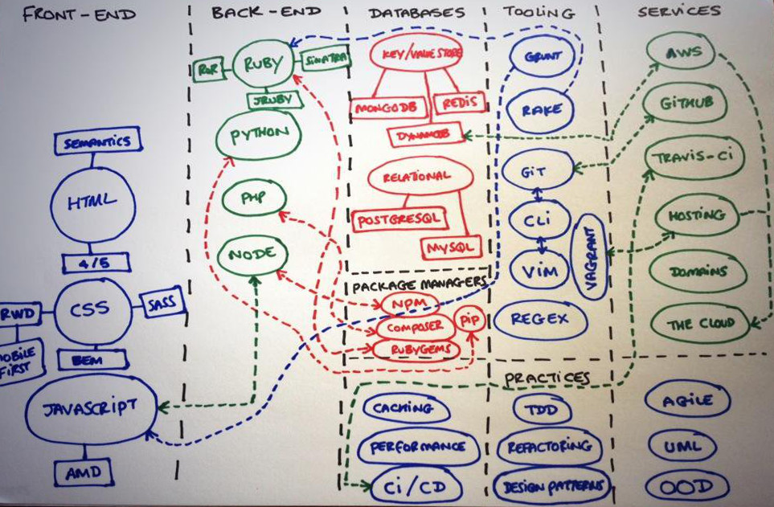
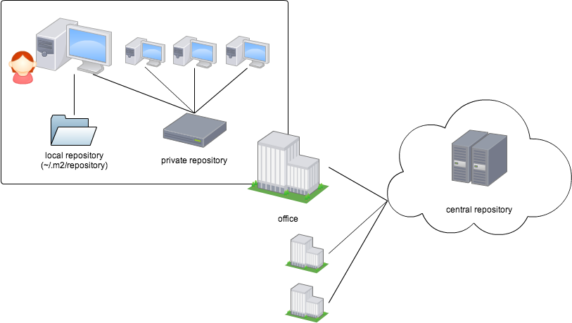

<!doctype html>
<html lang="en">

<head>
    <meta charset="utf-8">

    <title>GitHub x CircleCI x Maven Central</title>

    <meta name="description" content="GitHub x CircleCI x Maven Central">
    <meta name="author" content="k_kato">

    <meta name="apple-mobile-web-app-capable" content="yes">
    <meta name="apple-mobile-web-app-status-bar-style" content="black-translucent">

    <meta name="viewport"
          content="width=device-width, initial-scale=1.0, maximum-scale=1.0, user-scalable=no, minimal-ui">

    <link rel="stylesheet" href="css/reveal.css">
    <link rel="stylesheet" href="css/theme/sky.css" id="theme">

    <!-- Code syntax highlighting -->
    <link rel="stylesheet" href="lib/css/solarized-dark.css">

    <!-- Printing and PDF exports -->
    <script>
        var link = document.createElement('link');
        link.rel = 'stylesheet';
        link.type = 'text/css';
        link.href = window.location.search.match(/print-pdf/gi) ? 'css/print/pdf.css' : 'css/print/paper.css';
        document.getElementsByTagName('head')[0].appendChild(link);
    </script>

    <!--[if lt IE 9]>
    <script src="lib/js/html5shiv.js"></script>
    <![endif]-->
</head>

<body>

<div class="reveal">

    <!-- Any section element inside of this container is displayed as a slide -->
    <div class="slides">

        <section data-markdown>
            <script type="text/template">
                ## GitHub
                x
                ## CircleCI
                x
                ## Maven Central
                in
                #### Java Tool Study Fukuoka
                ###### November 20 2015 / @k_kato
            </script>
        </section>

        <section data-markdown
                 data-background="#002b36">
            <script type="text/template">
                ```javascript
                    async function aboutMe() {
                        const profile = {
                            name: "Keisuke KATO",
                            twitter: "@k_kato"
                        };
                        try {
                            return await followTwitterAsync(profile);
                        } catch (e) {
                            /* NOP */
                        }
                    }
                ```
            </script>
        </section>

        <section data-markdown>
            <script type="text/template">
                
                
                
            </script>
        </section>

        <section data-markdown
                 data-background="#fff">
            <script type="text/template">
                <div style="position: relative">
                    
                    <!-- .element: class="fragment" data-fragment-index="1" -->
                    <!-- .element: class="fragment" data-fragment-index="1" -->
                    <!-- .element: class="fragment" data-fragment-index="5" -->
                </div>
            </script>
        </section>

        <section data-markdown>
            <script type="text/template">
                ## もしも Maven がなかったら

                - 新兵： 本日配属されました。よろしくお願いします<!-- .element: class="fragment" data-fragment-index="1" -->
                - 古兵： 環境構築書。悲しいけどコレ，Excel なのよね<!-- .element: class="fragment" data-fragment-index="5" -->  
                <１日後>  <!-- .element: class="fragment" data-fragment-index="10" -->
                - 新兵： ビルドが通りません<!-- .element: class="fragment" data-fragment-index="15" -->
                - 古兵： あえて言おう，Excel が古いと。赤い彗星の jar 補填だ<!-- .element: class="fragment" data-fragment-index="20" -->
                - 新兵： ビルドが通りません<!-- .element: class="fragment" data-fragment-index="25" -->
                - 古兵： 言ったはずだ。共有サーバの jar が古いと<!-- .element: class="fragment" data-fragment-index="30" -->
                - 新兵： テストコードが通りません<!-- .element: class="fragment" data-fragment-index="35" -->
                - 古兵： 悲しいけどコレ，負の遺産なのよね！<!-- .element: class="fragment" data-fragment-index="40" -->
            </script>
        </section>

        <section data-markdown>
            <script type="text/template">
                # Maven

                Project Object Model

                pom.xml
                ```xml
                <dependency>
                    <groupId>junit</groupId>
                    <artifactId>junit</artifactId>
                    <version>4.12</version>
                </dependency>
                ```
            </script>
        </section>

        <section data-markdown>
            <script type="text/template">
                # Maven Central
                <div style="position: relative">
                    
                    <!-- .element: class="fragment" data-fragment-index="1" -->
                </div>
            </script>
        </section>

        <section data-markdown>
            <script type="text/template">
                # Maven Central
                <a href="http://search.maven.org/#artifactdetails|com.github.jlinqer|jlinqer|1.0.0|" target="_blank">
                    
                </a>

                - Java ライブラリの ~~墓場~~ 総合商社
                - Scala, Spring, Jersey, Apache Commons, etc...
                - 登録するとライブラリを簡単に配布できる
                - Javadoc とソースコードも配布できる
                - ライブラリのバージョンを継続的に管理できる

            </script>
        </section>

        <section data-markdown>
            <script type="text/template">
                ## Maven Central 公開手順

                1. package 名前空間を決める (com.github.xyzzy)
                1. GitHub アカウント取得 (xyzzy)
                1. GPG 鍵作成 (Send public key to Keyserver)
                1. pom.xml ビルド，署名
                1. 

            </script>
        </section>

        <section data-markdown>
            <script type="text/template">
                # CircleCI
                <a href="https://circleci.com/gh/k--kato/jLinqer" target="_blank">
                    
                </a>

                - 正常ビルド
                - Pull Request トリガーで自動ビルド
            </script>
        </section>


    </div>

</div>

<script src="lib/js/head.min.js"></script>
<script src="js/reveal.js"></script>

<script>

    // Full list of configuration options available at:
    // https://github.com/hakimel/reveal.js#configuration
    Reveal.initialize({
        controls: true,
        progress: true,
        history: true,
        center: true,

        transition: 'slide', // none/fade/slide/convex/concave/zoom

        // Optional reveal.js plugins
        dependencies: [
            {
                src: 'lib/js/classList.js', condition: function () {
                return !document.body.classList;
            }
            },
            {
                src: 'plugin/markdown/marked.js', condition: function () {
                return !!document.querySelector('[data-markdown]');
            }
            },
            {
                src: 'plugin/markdown/markdown.js', condition: function () {
                return !!document.querySelector('[data-markdown]');
            }
            },
            {
                src: 'plugin/highlight/highlight.js', async: true, callback: function () {
                hljs.initHighlightingOnLoad();
            }
            },
            {src: 'plugin/zoom-js/zoom.js', async: true},
            {src: 'plugin/notes/notes.js', async: true}
        ]
    });

</script>

</body>
</html>
